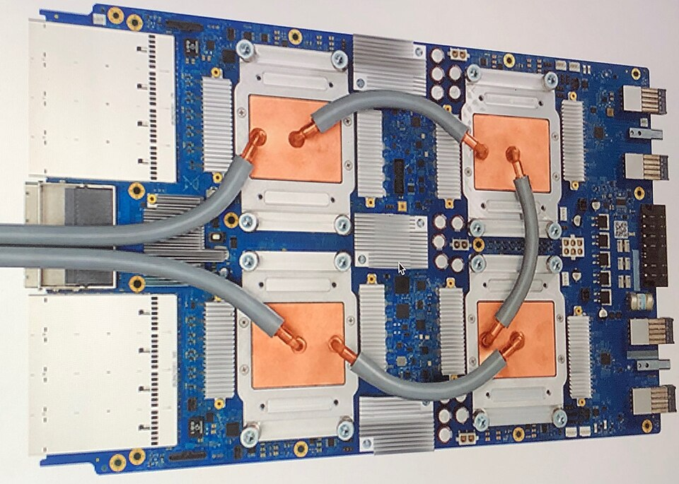

설립연도
1961년 (HP 반도체 사업부에서 출발)

통신·네트워크용 반도체를 만들어 온 회사로, 요즘은 구글 같은 빅테크가 직접 설계하는 맞춤형 AI 칩을 함께 만들어 주는 사업이 크게 자라고 있어요. 여러 회사를 사들이며 커 왔고, 2023년에는 기업용 서버 가상화 소프트웨어 회사 VMware를 인수해 소프트웨어 매출도 커졌어요.
칸에 마우스를 올리거나 누르면 자세한 설명을 볼 수 있어요.

구글, 메타 같은 빅테크가 자기 AI에 맞춰 설계한 칩을 함께 개발하고 생산까지 맡아 줘요. 엔비디아 GPU의 대안으로 주목받으며 가장 빠르게 크는 사업이에요.
대표 예구글 TPU 등 맞춤형 AI 칩(XPU)
데이터센터 안에서 수많은 서버를 연결하는 스위치 칩과 통신 칩이에요. AI 서버가 늘수록 필요한 양도 늘어나요.
대표 예토마호크 스위치 칩, 네트워크 칩
2023년 인수한 VMware의 서버 가상화 소프트웨어 등 기업용 소프트웨어예요. 한 대의 서버를 여러 대처럼 나눠 쓰게 해 줘요.
대표 예VMware, 메인프레임·보안 소프트웨어
스마트폰 속 와이파이·블루투스·신호 처리 칩과 저장장치용 칩이에요. 애플이 큰 고객이에요.
대표 예와이파이·블루투스 칩, RF 필터, 저장장치 칩
원화 금액은 1달러 = 1,348.8원(2026년 11월 23일 유럽중앙은행 기준환율)으로 환산한 대략적인 값이에요.
| 기간 | 매출 | 영업이익 | 순이익 |
|---|
브로드컴의 회계연도는 매년 11월 초에 끝나요.
사업마다 겨루는 상대가 달라요